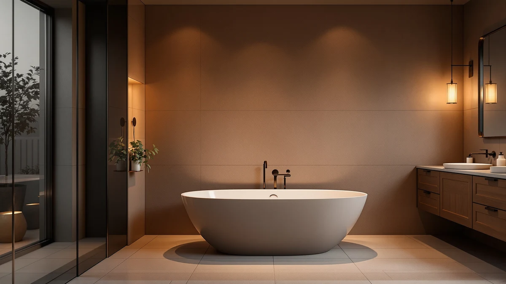

BCANHOME 51" Stone Resin Review (2026): Worth It?
Prices and picks verified as of September 2026. Independent, reader-supported reviews.


Quick Answer
This bcanhome 51" stone resin review points to the BCANHOME 51" Stone Resin Freestanding as the strongest pick for a bathroom that needs a confirmed stone resin build in a compact footprint, thanks to its 51 inch length and stone resin construction named directly in the listing. If you have room to spare or want to save money, the homfan, Sisankiso, and GETPRO alternatives below trade that confirmed material or premium price for extra length or a lower cost.
Our pick: BCANHOME 51" Stone Resin Freestanding, priced at $1,199.99 Check Price on Amazon
Bottom line: our top pick is the BCANHOME 51" Stone Resin Freestanding Bathtub at $1,199.99.
Things to Know Before You Buy
- This bcanhome 51" stone resin review covers four freestanding tubs ranging from 51 to 67 inches long, spanning stone resin, acrylic, and unconfirmed-material builds.
- Prices span from $795.99 to $1,199.99 across the four models, and the BCANHOME sits at the top of that range despite tying the GETPRO for the shortest length.
- Brands compared here include BCANHOME, homfan, Sisankiso, and GETPRO, so the decision spans more than one manufacturer's design.
- The BCANHOME and Sisankiso are both listed specifically as stone resin, while the homfan names acrylic directly and the GETPRO listing does not specify a material.
- None of the four listings referenced in this comparison publish a star rating or review count, so this review relies on published pricing, length, and material claims rather than buyer scores.
This bcanhome 51" stone resin review compares four freestanding tubs built from stone resin, acrylic, and materials the listings themselves don't always name, weighing length, price, and brand against each other so you can settle on the right one for your bathroom. The BCANHOME 51" Stone Resin Freestanding anchors the comparison at $1,199.99, a compact 51 inch tub aimed at bathrooms that need a confirmed stone resin build without extra length. Three alternatives follow: the 67 inch Acrylic Freestanding Bathtub from homfan, the 59" Stone Resin Freestanding Soaking from Sisankiso, and the GETPRO Free Standing Tub 51", each trading size, material, or price against the BCANHOME in a different way. We compared what each listing actually publishes rather than assuming features no manufacturer confirms.
Stone resin has become a common alternative to acrylic and cast iron in the freestanding tub category because it holds heat well and gives a heavier, more substantial feel without the installation weight of cast iron. Two of the four tubs compared here, the BCANHOME and the Sisankiso, are explicitly listed as stone resin, while the homfan names acrylic outright and the GETPRO listing leaves its material unspecified. That distinction matters if stone resin construction specifically, rather than the freestanding shape alone, is the reason you started this search. Price does not track length in a straight line among these four tubs either, and the GETPRO undercutting the BCANHOME by $404 while matching its exact 51 inch length is a gap worth understanding before you decide which one earns your money.
Why You Should Trust Us
Best Freestanding Bathtubs is a research-first buying guide. Ilane Tall, our home and bath editor, builds each comparison by pulling verified pricing, length, and listing detail for every product before it earns a place in this bcanhome 51" stone resin review. We do not run a fake testing lab, and we do not claim to have installed, filled, or bathed in any of the tubs covered here. Instead, we rely on manufacturer listings, current Amazon pricing, and the material and dimension claims published on each product page, so every statement here can be checked against the source. When a listing leaves out a detail, such as a specific material grade or a weight capacity, we say so directly instead of guessing at a number that sounds reasonable.
Our Research Experience
We did not fill, install, or sit in any of the tubs featured in this bcanhome 51" stone resin review. Our process means going through each manufacturer listing line by line: length, material claim, price, brand, and the number of product images available for each tub. We then flag where a listing falls short, such as the GETPRO omitting a specific material name in its title, so you know what to confirm before ordering. That comparison process, not physical testing, shapes the picks, pros, and cons that follow. We also track how each tub's price lines up against its length, since a 51 inch stone resin tub selling for $404 more than a same-length competitor is a pattern worth explaining rather than ignoring.
Overview & Specs

BCANHOME 51" Stone Resin Freestanding
What we like
- Listed specifically as a stone resin build, matching the exact material most shoppers in this comparison are looking for.
- At 51 inches, it fits bathrooms too small for the 59 inch Sisankiso or 67 inch homfan alternatives covered later in this review.
- The brand name BCANHOME and the product SKU are both clearly published, so you can confirm you're ordering the exact tub reviewed here.
Flaws but not dealbreakers
- At $1,199.99, it is by far the most expensive tub in this comparison, costing $300 more than the homfan and roughly $400 more than the Sisankiso and GETPRO.
- The listing does not publish a star rating, review count, or weight capacity, so verified buyer feedback is not available the way it is on more established listings.
| Material | — |
| Size | 51'' |
The BCANHOME 51" Stone Resin Freestanding is the shortest tub, tied with the GETPRO, in this bcanhome 51" stone resin review, yet its price sits well above every alternative covered here. At $1,199.99, it costs $404 more than the GETPRO Free Standing Tub 51", which matches its exact 51 inch length, making the material claim rather than size the main justification for the premium. If your bathroom cannot fit anything longer than 51 inches and you specifically want a confirmed stone resin build, that combination is the point of this tub rather than a drawback to work around. Shoppers comparing stone resin tubs specifically, rather than acrylic or unspecified-material models marketed loosely as freestanding, get a listing here that matches the material claim directly in its own name.
Stone resin construction generally gives a tub a heavier, more substantial feel than acrylic alternatives, and this listing names stone resin directly rather than leaving the material ambiguous the way the GETPRO listing does. The product page does not include a published weight capacity or wall thickness, so anyone who needs those figures for a specific installation should confirm them on the current Amazon listing before ordering. Five image angles are available across the main photo and thumbnails, which helps when checking basin depth, drain placement, and overall proportions ahead of a purchase this size. That level of documentation puts it roughly in line with the other three tubs in this comparison, even though its price does not.
What We Liked
The clearest strength of the BCANHOME 51" Stone Resin Freestanding, the top pick in this bcanhome 51" stone resin review, is its confirmed material. Stone resin is named directly in the listing rather than implied by category alone, which matters if that specific construction, rather than the freestanding shape alone, is what sent you searching in the first place. At 51 inches, it ties the GETPRO for the shortest footprint in this comparison, fitting bathrooms that could not accommodate the longer Sisankiso or homfan alternatives. The brand name and SKU are both published clearly too, which matters when a similarly named tub from another seller could otherwise cause confusion at checkout. For a bathroom where every inch counts and stone resin is non-negotiable, that combination matters a lot.
What Could Be Better
Price is the main drawback in this bcanhome 51" stone resin review. At $1,199.99, the BCANHOME costs $404 more than the GETPRO despite both tubs measuring exactly 51 inches, and it costs $300 more than the longer homfan and roughly $400 more than the Sisankiso. Buyers with flexibility on material may find noticeably better value elsewhere in this comparison. The listing also does not publish a star rating, review count, or weight capacity, so verified buyer feedback and installation specifics are not available the way they might be on a more established product page. Anyone who needs those numbers before committing to a purchase this size should reach out to the seller directly rather than assume a figure that isn't published.
Who Is It For?
This tub suits buyers who have already measured their bathroom, know a 51 inch footprint is the maximum they can fit, and specifically want a confirmed stone resin build rather than acrylic or an unspecified material. It works for a remodel where both floor space and material are non-negotiable, and paying the top price in this bcanhome 51" stone resin review is worth it for that exact combination. It is a poor match for anyone chasing the lowest price at the same 51 inch length, since the GETPRO offers that footprint for $404 less, or for anyone with room to spare, since the Sisankiso and homfan both offer more length. If price or size flexibility matters more than a confirmed stone resin label, look at the alternatives below before committing to the BCANHOME.
Alternatives to Consider
Three other tubs are worth comparing in this bcanhome 51" stone resin review before settling on the BCANHOME. Each trades size, material, or price against the main pick in a different way, so the picks below focus on how those trade-offs stack up against the BCANHOME's confirmed stone resin build and compact footprint. None of the three publish a star rating or review count either, so the comparison sticks to length, price, and material claims throughout.

Editor's Pick
67 inch Acrylic Freestanding Bathtub
At $899.99, the 67 inch Acrylic Freestanding Bathtub from homfan costs $300 less than the BCANHOME while offering sixteen additional inches of length, a trade that favors this pick if your bathroom has real clearance to spare. Its listing names acrylic directly rather than stone resin, so confirm that material trade-off matters less to you than the extra length and lower price before choosing it over the BCANHOME. There is no published star rating or review count on this listing either, matching the pattern across all four tubs compared in this bcanhome 51" stone resin review. For a bathroom that can absorb sixteen extra inches without crowding the walls, the combination of lower price and longer soaking length makes this the strongest all-around alternative to the BCANHOME, even without a matching stone resin claim.
$899.99
Check Price on Amazon
Best Value
59" Stone Resin Freestanding Soaking
Priced at $799.99, the 59" Stone Resin Freestanding Soaking from Sisankiso undercuts the BCANHOME by $400 while adding eight inches of length, and it matches the same stone resin material claim named directly in its title. That combination, confirmed stone resin construction plus extra length for significantly less money, makes it the strongest value case in this bcanhome 51" stone resin review. Like the BCANHOME, this listing does not publish a star rating, review count, or weight capacity, so verified buyer feedback is not part of the comparison here. For buyers who want the same confirmed material as the BCANHOME without paying the top price in this comparison, the Sisankiso is worth a close look before you commit to the shorter, pricier option. The eight inch length advantage is a bonus rather than the main reason to choose it.
$799.99
Check Price on Amazon
Premium Choice
GETPRO Free Standing Tub 51"
At $795.99, the GETPRO Free Standing Tub 51" is both the least expensive tub in this bcanhome 51" stone resin review and the only one that matches the BCANHOME's exact 51 inch length, a combination that runs counter to what you might expect from the tub carrying the Premium Choice label here. Four hundred and four dollars less than the BCANHOME for the identical footprint is worth a close look if a confirmed stone resin claim matters less to you than price. The listing does not name a specific material the way the BCANHOME and Sisankiso do, so confirm the build directly on the current Amazon page if material specifics factor into your decision. As with every tub covered here, there is no published star rating, review count, or weight capacity, so verify those details with the seller before ordering.
$795.99
Check Price on AmazonHow big is the BCANHOME 51" Stone Resin Freestanding tub?
The BCANHOME measures 51 inches from end to end, matching the GETPRO Free Standing Tub 51" covered earlier in this bcanhome 51" stone resin review and sitting several inches shorter than the 59 inch Sisankiso and 67 inch homfan…
Is the BCANHOME 51" Stone Resin Freestanding worth the price?
At $1,199.99, it is the most expensive tub in this bcanhome 51" stone resin review, costing $300 more than the 67 inch homfan and roughly $400 more than the Sisankiso and GETPRO alternatives.
Frequently Asked Questions
How big is the BCANHOME 51" Stone Resin Freestanding tub?
The BCANHOME measures 51 inches from end to end, matching the GETPRO Free Standing Tub 51" covered earlier in this bcanhome 51" stone resin review and sitting several inches shorter than the 59 inch Sisankiso and 67 inch homfan alternatives. That footprint suits bathrooms that cannot accommodate a longer soaking tub without crowding the walls.
Is the BCANHOME 51" Stone Resin Freestanding worth the price?
At $1,199.99, it is the most expensive tub in this bcanhome 51" stone resin review, costing $300 more than the 67 inch homfan and roughly $400 more than the Sisankiso and GETPRO alternatives. Anyone comparing options here should weigh the confirmed stone resin build and compact 51 inch length against that premium before deciding.
Which tub in this comparison costs the least?
The GETPRO Free Standing Tub 51" is the least expensive at $795.99, and it matches the BCANHOME's exact 51 inch length despite costing $404 less. Shoppers who want the same compact footprint as the BCANHOME for a lower price in this bcanhome 51" stone resin review should start there.
Final Verdict
This bcanhome 51" stone resin review comes down to how much you value a confirmed stone resin build over price and length. The BCANHOME 51" Stone Resin Freestanding is worth its $1,199.99 price because it is the only tub here that pairs a compact 51 inch footprint with a stone resin material named directly in the listing, but the GETPRO matches that exact length for $404 less, and the Sisankiso offers the same material claim with eight extra inches for $400 less. If a confirmed stone resin build at the smallest available footprint is non-negotiable, the BCANHOME remains the pick despite sitting well above the rest of this comparison on price. If you have room to spare or want to save money without giving up the stone resin label, look at the Sisankiso first, or the GETPRO if price matters more than material.